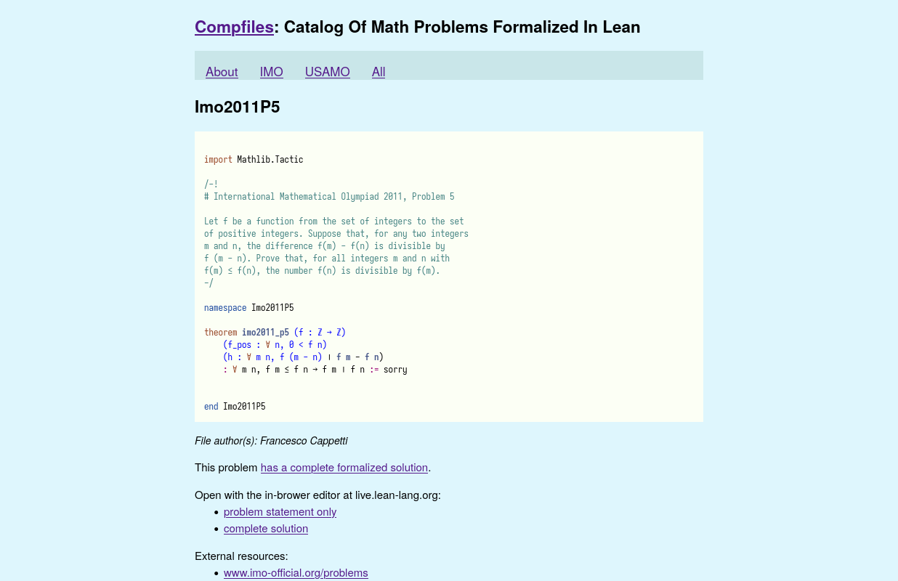
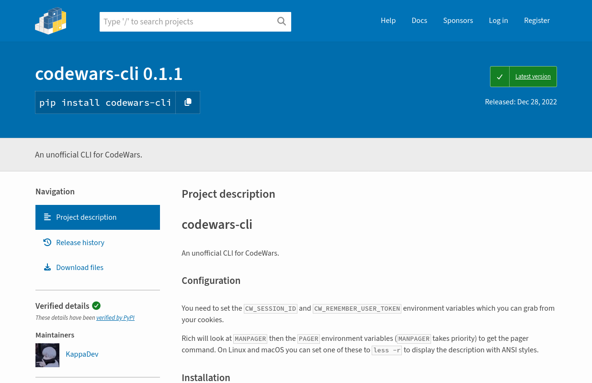
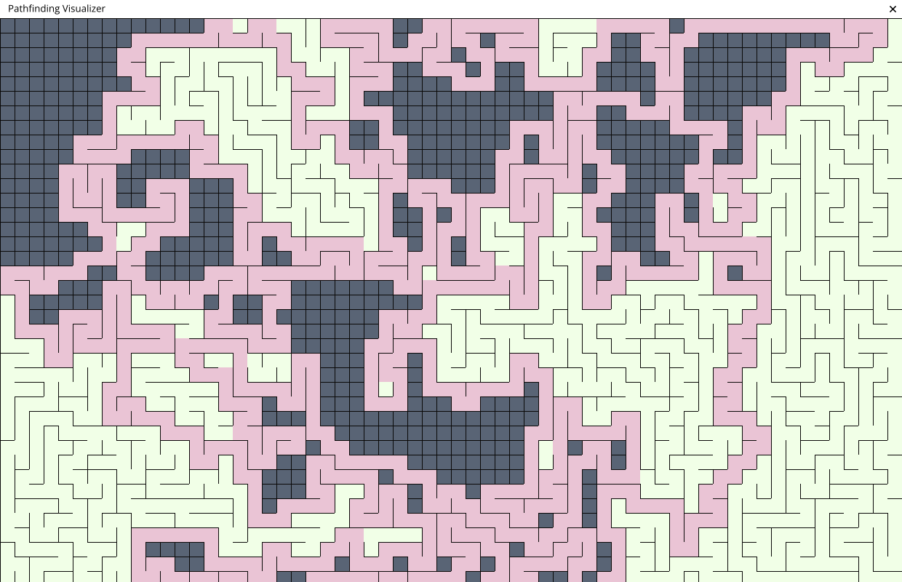
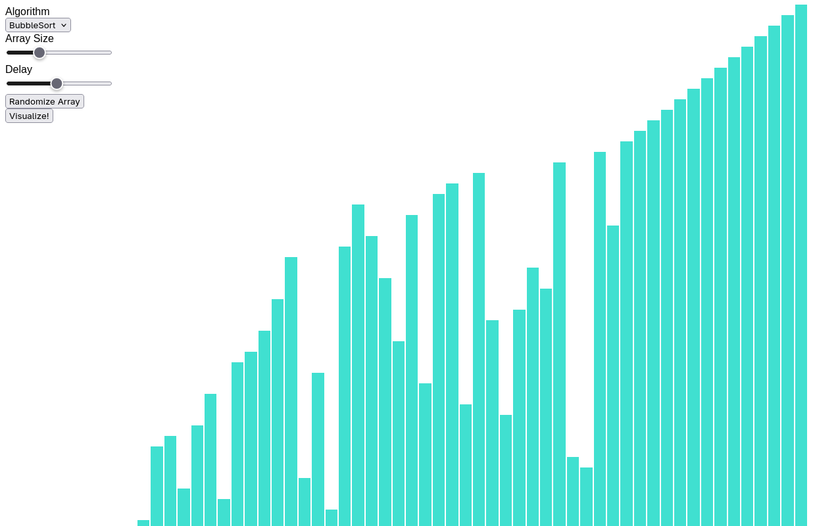
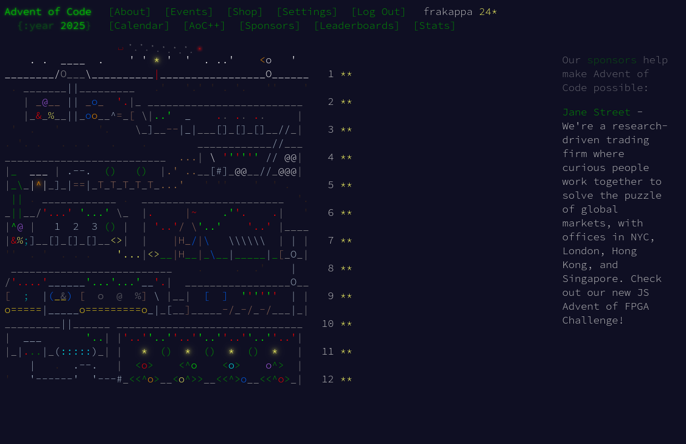
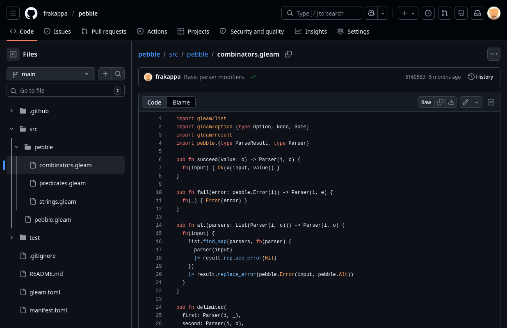

Projects
Here are some projects that I've worked on.
compfiles
This repository collects olympiad-style math problems and their solutions, formalized in Lean 4. I contributed the formalization of two problems so far (with more in progress): Imo2011P5 and Imo1971P1.

codewars-cli
A CLI for Codewars. It allows to test, run, and submit solution from your terminal. This required me to reverse-engineer the submission process, it was an incredibly fun project!pathfinding-visualizer
A simple visualizer for pathfinding (and maze-generation) algorithms, built with Python and Pygame. It features an interactive user interface that allows you to modify the maze and run a selection of algorithms.

sorting-visualizer
A simple sorting visualizer. It's built with Rust and Leptos and runs in the browser via WebAssembly. It's still quite unpolished, but it was a great opportunity to get more familiar with Rust and WebAssembly.aoc
This year I finally completed all the Advent of Code problems. This repository contains solutions to every challenge, written in Gleam.
